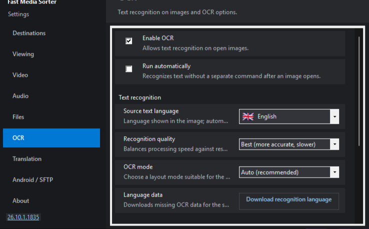
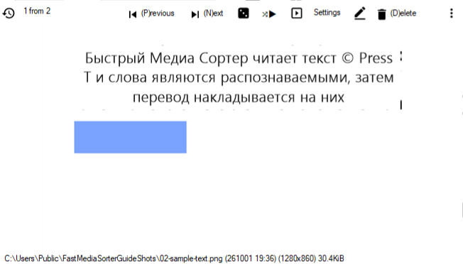

Main navigationОсновная навигацияОсновна навігаціяHOW TO · OCR & TRANSLATION
Read the text on a picture and see it in your languageПрочитать текст на картинке и увидеть его на своём языкеПрочитайте текст на зображенні й побачте його своєю мовою
A scanned page, a screenshot, a photo of a sign: the viewer recognizes the text and draws the translation over each block, in place. Only the recognized text goes to the translator you choose - by default one running on your own PC - and the image itself is never uploaded.Скан страницы, скриншот, фотография вывески: просмотрщик распознаёт текст и рисует перевод поверх каждого блока, прямо на месте. Переводчику уходит только распознанный текст (по умолчанию - работающему на вашем компьютере); само изображение никуда не загружается.Скан сторінки, знімок екрана, фото вивіски: переглядач розпізнає текст і малює переклад поверх кожного блоку, просто на місці. Перекладачу надсилається лише розпізнаний текст (за замовчуванням - тому, що працює на вашому ПК); саме зображення ніде не завантажується.
Press F2 for Settings and open the OCR page in the list on the left. Tick Enable OCR; Run automatically next to it recognizes every image as you open it, which is worth switching on only when you are working through a whole folder of foreign text. Until OCR is enabled, T keeps its older meaning and simply rotates the picture.Нажмите F2 - Настройки - и откройте страницу OCR в списке слева. Поставьте галочку Включить OCR; соседняя Запускать автоматически распознаёт каждое открытое изображение, и включать её стоит, только когда вы разбираете целую папку с иностранным текстом. Пока OCR не включён, T сохраняет прежний смысл и просто поворачивает картинку.Натисніть F2 для Налаштувань і відкрийте сторінку OCR у списку ліворуч. Поставте прапорець Увімкнути OCR; поруч Запускати автоматично розпізнає кожне зображення під час відкриття - вмикати його варто лише тоді, коли ви опрацьовуєте цілу теку з іншомовним текстом. Доки OCR не ввімкнено, T зберігає свій давніший сенс і просто повертає зображення.The 32-bit build for Windows 7 and 8.1 recognizes and translates too, but has its own older Settings window, where all of these settings sit on one tab; the names below are those of the 64-bit viewer.32-битная сборка для Windows 7 и 8.1 тоже распознаёт и переводит, но у неё своё, более старое окно настроек: все эти параметры собраны на одной вкладке; названия ниже - из 64-битного просмотрщика.32-бітна збірка для Windows 7 і 8.1 теж розпізнає та перекладає, але має власне, старіше вікно налаштувань: усі ці параметри зібрано на одній вкладці; назви нижче - з 64-бітного переглядача.

The OCR page: switch recognition on, choose the quality and the source language.Страница OCR: включите распознавание, выберите качество и язык исходного текста.Сторінка OCR: увімкніть розпізнавання, виберіть якість і мову вихідного тексту.
Tell it what it is readingСкажите, что именно он читаетСкажіть, що саме він читає
Under Text recognition on the same page, set the Source text language - or leave Auto-detect - and press Download recognition language pack in the Language data row to fetch a pack that is not bundled. Two more settings matter when a page resists:В группе Распознавание текста на той же странице укажите Язык исходного текста (или оставьте Автоопределение) и нажмите Скачать пакет распознавания в строке Языковые данные, чтобы дозагрузить пакет, которого нет в комплекте. Ещё две настройки пригодятся, когда страница сопротивляется:У групі Розпізнавання тексту на цій самій сторінці вкажіть Мова початкового тексту - або залиште Автовизначення - і натисніть Завантажити пакет розпізнавання у рядку Мовні дані, щоб завантажити пакет, якого немає в комплекті. Ще два налаштування стануть у пригоді, коли сторінка чинить опір:
Recognition quality - Fast is the default; Best (more accurate, slower) trades speed for accuracy.Качество распознавания - по умолчанию Быстрая (fast); Лучшая (best, медленнее) жертвует скоростью ради точности.Якість розпізнавання - за замовчуванням Швидка (fast); Найкраща (best, повільніше) жертвує швидкістю заради точності.
OCR mode - Auto (recommended) suits most pictures; Single block, Sparse text, Single line and Vertical text are there for layouts that auto reads badly.Режим OCR - Авто (рекомендуется) подходит большинству картинок; Один блок, Разреженный текст, Одна строка и Вертикальный текст существуют для вёрстки, которую авто читает плохо.Режим OCR - Авто (рекомендовано) підходить більшості зображень; Один блок, Розріджений текст, Один рядок і Вертикальний текст існують для верстки, яку авто читає погано.
Choose who translatesВыберите, кто переводитВиберіть, хто перекладає
The Translation page next to it holds the translator, chosen in Translation provider. The default is Ollama - a language model running on your own machine - and the Local Ollama server row does the setup: Install Ollama, Start Ollama, then pick a Translation model and press Pull. LibreTranslate is the alternative if you already have a server: put its address in Service address. An API key, where one is needed, is stored encrypted by Windows. Finally set the Translation language - the language you want to read. Only the recognized text goes to the translator - by HTTP to the address in Service address: the local Ollama server (localhost) by default, or the LibreTranslate server you name, together with the API key if you set one. The image itself is never sent.Соседняя страница Перевод отвечает за переводчик, он выбирается в поле Сервис перевода. По умолчанию это Ollama - языковая модель, работающая на вашей же машине; строка Локальный сервер Ollama делает всю настройку: Установить Ollama, Запустить Ollama, затем выберите Модель перевода и нажмите Загрузить. LibreTranslate - альтернатива, если сервер у вас уже есть: его адрес указывается в поле Адрес сервиса. Ключ API, где он нужен, хранится зашифрованным средствами Windows. Наконец, задайте Язык перевода - тот, на котором вы хотите читать. Переводчику уходит только распознанный текст - по HTTP на адрес из поля Адрес сервиса: на локальный сервер Ollama (localhost) по умолчанию или на указанный вами сервер LibreTranslate, вместе с ключом API, если он задан. Само изображение не отправляется.Сусідня сторінка Переклад містить перекладач, його вибирають у полі Сервіс перекладу. За замовчуванням це Ollama - мовна модель, що працює на вашому власному комп'ютері, - і рядок Локальний сервер Ollama виконує все налаштування: Встановити Ollama, Запустити Ollama, потім виберіть Модель перекладу й натисніть Завантажити. LibreTranslate - альтернатива, якщо сервер у вас уже є: його адресу вкажіть у полі Адреса сервісу. Ключ API, де він потрібен, зберігається в зашифрованому вигляді засобами Windows. Нарешті задайте Мова перекладу - ту, якою ви хочете читати. Перекладачу надсилається лише розпізнаний текст - за HTTP на адресу з поля Адреса сервісу: на локальний сервер Ollama (localhost) за замовчуванням або на вказаний вами сервер LibreTranslate, разом із ключем API, якщо його задано. Саме зображення не надсилається.
Press T on the imageНажмите T на изображенииНатисніть T на зображенні
One press recognizes the picture and shows the translation over it; the next press hides the overlay again. Shift+T switches on auto mode, where every image you open is processed without asking. The Translate toolbar button does the same as T, and a right-click on it opens these settings directly.Одно нажатие распознаёт картинку и показывает перевод поверх неё; следующее нажатие снова прячет наложение. Shift+T включает авто-режим, в котором обрабатывается каждое открытое изображение, без вопросов. Кнопка Перевод на панели делает то же, что T, а правый щелчок по ней открывает эти настройки напрямую.Одне натискання розпізнає зображення й показує переклад поверх нього; наступне натискання знову ховає накладання. Shift+T вмикає авторежим, у якому кожне відкрите вами зображення обробляється без запитів. Кнопка Переклад на панелі робить те саме, що й T, а клацання правою кнопкою миші по ній відкриває ці налаштування напряму.

One press on T: the translation is laid over the original words.Одно нажатие T: перевод ложится поверх исходных слов.Одне натискання T: переклад лягає поверх вихідних слів.
Make the overlay comfortableНастройте наложение под себяНалаштуйте накладання під себе
The Translation over the image group at the bottom of the Translation page (folded until you open it) sets Panel opacity - by default the plate fully covers the original, so the translation reads cleanly; lower it if you want the picture to show through. Show translation overlay hides or restores an overlay that is already there. Cache results on disk, so the same picture is not recognized twice, is not on these pages: it is on Storage, in the Text recognition group, next to the size limit, the space in use and a Clear button (the 32-bit build keeps its own default limit and has no such setting).Группа Перевод поверх изображения внизу страницы Перевод (пока вы её не откроете, она свёрнута) задаёт Непрозрачность панели (по умолчанию плашка полностью закрывает оригинал, чтобы перевод читался чисто; уменьшите её, если хотите видеть картинку сквозь плашку). Флажок Показывать панель перевода прячет и возвращает уже готовое наложение. Кэшировать результаты на диске, чтобы одна и та же картинка не распознавалась дважды, на этих страницах нет: он находится на странице Хранилище, в группе Распознавание текста, рядом с ограничением размера, занятым местом и кнопкой Очистить (в 32-битной сборке свой лимит по умолчанию, такой настройки там нет).Група Переклад поверх зображення внизу сторінки Переклад (поки ви її не відкриєте, вона згорнута) задає Непрозорість панелі - за замовчуванням плашка повністю закриває оригінал, щоб переклад читався чисто; зменште її, якщо хочете, щоб зображення проглядало крізь неї. Показувати панель перекладу ховає або повертає накладання, яке вже є. Кешувати результати на диску, щоб те саме зображення не розпізнавалося двічі, на цих сторінках немає: він на сторінці Сховище, у групі Розпізнавання тексту, поруч з обмеженням розміру, зайнятим місцем і кнопкою Очистити (у 32-бітній збірці свій ліміт за замовчуванням, такого налаштування там немає).
It stays on your computerВсё остаётся на вашем компьютереУсе лишається на вашому комп'ютері
Recognition is always local. With Ollama the translation is local too, so a private document is never uploaded anywhere. Only if you deliberately point Service address at an outside service does the recognized text leave the machine - and still never the image.Распознавание всегда локальное. С Ollama перевод тоже локальный, поэтому личный документ никуда не выгружается. С машины уходит что-то - распознанный текст, но не изображение, - только если вы сами направите Адрес сервиса на внешний сервис.Розпізнавання завжди локальне. З Ollama переклад теж локальний, тож приватний документ нікуди не вивантажується. Щось залишає комп'ютер - розпізнаний текст, але не зображення, - лише якщо ви свідомо спрямуєте Адресу сервісу на зовнішній сервіс.
If nothing is recognizedЕсли ничего не распозналосьЯкщо нічого не розпізналося
Set the source language explicitly instead of auto-detect, set Recognition quality to Best (more accurate, slower), and try an OCR mode that matches the layout. A photo taken at an angle or a very small screenshot is the hard case - straighten it or open a larger copy.Укажите язык исходного текста явно вместо автоопределения, установите Качество распознаванияЛучшая (best, медленнее) и попробуйте Режим OCR, подходящий вёрстке. Тяжёлый случай - снимок под углом или совсем мелкий скриншот: выровняйте его или откройте копию побольше.Вкажіть мову початкового тексту явно замість автовизначення, встановіть Якість розпізнаванняНайкраща (best, повільніше) і спробуйте Режим OCR, що відповідає верстці. Важкий випадок - фото, зроблене під кутом, або дуже дрібний знімок екрана: вирівняйте його або відкрийте більшу копію.